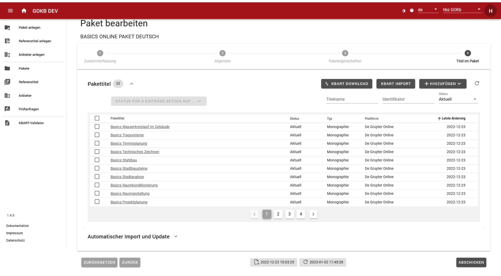

Anlegen und Pflege von Paketen
KBART-Listen besorgen und prüfen
Paket- und Titeldaten werden in Form von KBART-Dateien in die GOKB eingespielt.
KBART ist ein NISO-Standard zur Darstellung von Titeln in einem Paket. Eine entsprechende Beispiel-KBART-Datei, die auch GOKB-relevante Erweiterungen des Standards sowie Erklärungen zu den einzelnen KBART-Felder beinhaltet, findet sich hier: Einführung in KBART
1. Korrektheit der KBART-Datei
Dabei ist darauf zu achten, dass die KBART-Datei korrekt ist, d. h.
- Die Datei muss formal korrekt sein.
- Die Feldbezeichnungen und -inhalte müssen dem KBART-Standard sowie dem Format der proprietären Erweiterungen der GOKB entsprechen. Eine Liste der Felder finden Sie hier.
- Alle Spaltenüberschriften müssen existieren - auch, wenn sie in der Tabelle keine Werte haben.
- Die Zeichenkodierung der Datei muss UTF-8 sein.
- Tabulator als Trennzeichen
- Vorzugsweise alphabetische Reihenfolge der Titel
- Der Dateiname muss dem Standard entsprechen.
- Die Datei muss hinsichtlich ihres Inhalts dem tatsächlich vom Anbieter angebotenen Pakets entsprechen. d. h.
- Der Titelumfang und -inhalt muss dem verhandelten Paket entsprechen.
- Die Zugangs-URLs für einzelne Titel müssen korrekt sein. Es müssen außerdem allgemeingültige URLs sein, keine einrichtungsspezifischen URLs.
- Die Einzelressourcen müssen mit Identifikatoren versehen sein.
- Bei Serienpublikationen wie Journals müssen die Abdeckungsinformationen (Jahrgänge) der tatsächlich im angebotenen Paket enthaltenen Jahrgängen korrekt sein. Werden beispielsweise in einem Paket nur die Jahrgänge ab 1996 angeboten, muss sich das in den entsprechenden Spalten der KBART-Liste wiederfinden.
2. Pflichtfelder für fortlaufende Ressourcen (E-Journals, Serienstücke)
| Element | KBART-Feld | Pflicht/Fakultativ | Bemerkung |
|---|---|---|---|
| Pubikationstyp der Ressource | publication_type | Pflicht | Essentiell zur Unterscheidung E-Journal / E-Book |
| Name der Publikation | publication_title | Pflicht | |
| ZDBID | zdb_id | Fakultativ* | Mindestens einer der vier Identifikatoren muss vorhanden sein |
| Elektronische ISSN | online_identifier | Fakultativ* | Mindestens einer der vier Identifikatoren muss vorhanden sein |
| Print ISSN | print_identifier | Fakultativ* | Mindestens einer der vier Identifikatoren muss vorhanden sein |
| Proprietäre Anbieter-ID | title_id | Fakultativ* | Mindestens einer der vier Identifikatoren muss vorhanden sein |
| Abdeckungsbeginn | date_first_issue_online | Pflicht | |
| num_first_vol_online | Fakultativ | ||
| num_first_issue_online | Fakultativ | ||
| Abdeckungsende | date_last_issue_online | Fakultativ | |
| num_last_vol_online | Fakultativ | ||
| num_last_issue_online | Fakultativ | ||
| Abdeckungstiefe (fulltext, abstracts) | coverage_depth | Pflicht | |
| Direkte Zugriffs-URL | title_url | Pflicht | |
| Medienart des Titels | medium | Fakultativ |
3. Pflichtfelder für Monographien (E-Books, audiovisuelle Medien)
| Element | KBART-Feld | Pflicht/Fakultativ | Bemerkung |
|---|---|---|---|
| Pubikationstyp der Ressource | publication_type | Pflicht | Essentiell zur Unterscheidung E-Journal / E-Book |
| Name der Publikation | publication_title | Pflicht | |
| Elektronische ISBN | online_identifier | Fakultativ* | Mindestens einer der drei Identifikatoren muss vorhanden sein |
| Digital Object Identifier (DOI) | doi_identifier | Fakultativ* | Mindestens einer der drei Identifikatoren muss vorhanden sein |
| Proprietäre Anbieter-ID | title_id | Fakultativ* | Mindestens einer der drei Identifikatoren muss vorhanden sein |
| Print ISBN | print_identifier | Fakultativ | |
| Veröffentlichungsdatum der Publikation online | date_monograph_published_online | Pflicht | |
| Bandnummer | monograph_volume | Fakultativ | |
| Auflage | monograph_edition | Fakultativ | |
| Reihentitel | monograph_parent_collection_title | Fakultativ | |
| Autor*in | first_author | Fakultativ | |
| Herausgeber*in | first_editor | Fakultativ | |
| Direkte Zugriffs-URL | title_url | Pflicht | |
| Medienart des Titels | medium | Fakultativ |
Es werden von der GOKB u.a. nicht offizielle KBART-Felder unterstützt:
- Für Serienpublikationen wird die ZDB-ID (siehe Abschnitt "Korrekte Aufnahme von
Journals in der ZDB") im Feld
zdb_idverwendet. - Die Paketbeitritts- und -austrittsdaten für einzelne Titel werden in den
Datumsfeldern
access_start_dateundaccess_end_datefestgehalten. Diese sind hilfreich, um den historischen Stand eines Pakets zu einem bestimmten Zeitpunkt zu erhalten, also wann ein Titel innerhalb eines Pakets hinzugekommen ist bzw. wann dieser das Paket verlassen hat. - Für Monographien der Reihentitel:
monograph_parent_collection_title. - Für verschiedene Medienarten das Feld:
medium.
4. Hinweise
- Achten Sie darauf, pro Paket möglichst globale Gesamttitellisten via KBART-Format in die GOKB einzuspielen. Spezielle Titelzuschnitte, die sich ggf. für verschiedene Bibliotheken aus diesem Gesamtpaket ergeben, werden erst in von der GOKB abhängigen Systemen wie z. B. in ERM-Systemen definiert.
- Achten Sie bei Journal-Listen darauf, dass jeder Titel über entweder eine ZDB-ID, eine e-ISSN oder zumindest eine korrespondierende Print-ISSN verfügt.
- Insbesondere bei Titeln aus E-Book-Paketen muss für jedes E-Book eine interne Titel-ID
(
title_id) des Anbieters in der KBART-Liste angefügt sein, da andere Identifikatoren wie ISBN häufig nicht eindeutig sind.
Suchen eines Pakets
Suchen Sie ein Paket über den Menüpunkt "Pakete" auf der linken Menüleiste. Sie können in der Maske über den Namen des Pakets, über den Anbieter des Pakets, über einen Identifikator, über den Status des Pakets oder über eine Kuratorengruppe suchen bzw. filtern.
Anlegen eines Pakets
Das Anlegen und das Bearbeiten eines Pakets wird über ähnliche Eingabemasken gesteuert.
- Sie legen ein Paket an über den Menüpunkt "Paket anlegen".
- Sie bearbeiten ein bestehendes Paket, indem sie über "Suchen eines Pakets" nach dem Paket suchen und auswählen.
Beide Masken bestehen aus weitgehend identischen Schritten. Lediglich der Schritt "Zusammenfassung" erscheint bei "Paket bearbeiten" als Schritt 1, bei "Paket anlegen" als letzter Schritt 4.
Schritt 1: Allgemeine Daten
Hier können Sie die allgemeinen Daten zum Paket wie den Namen, Anbieter und die Plattform eintragen.
- Name: Der offizielle Name des Pakets, unter dem es laut Anbieter angeboten wird. Falls Sie Daten auf ein schon existierendes Paket spielen wollen, müssen Sie hier den genauen Namen des Pakets in der GOKB eingeben (idealerweise mit Copy & Paste). Die Richtlinien zur Benennung von Paketen finden Sie hier.
- URL: Hier können Sie eine Informations-URL zum Paket hinterlegen, die auf die entsprechende Website des Anbieters verweist.
- Anbieter: Wählen Sie hier den Anbieter des Pakets aus. Sie finden den Anbieter über eine Vorschlagsliste, wenn Sie in das Textfeld den Namen oder einen Teil des Anbieternamens eingeben. Eine Anleitung zum Anlegen des Anbieters finden Sie hier.
- Plattform: Wählen Sie hier die Plattform des Pakets aus. Sie finden die Plattform über eine Vorschlagsliste, wenn Sie in das Textfeld den Namen oder einen Teil des Plattformnames oder der Plattform-URL eingeben. Eine Anleitung zum Anlegen der Plattform finden Sie hier.
Beenden Sie die Eingabe mit Anwahl des Buttons "Weiter".
Schritt 2: Paketeigenschaften
In diesem Schritt können Sie weitere Paketeigenschaften sowie Identifikatoren und Namensvarianten festhalten.
- Pakettyp: Hier können Sie festlegen, um was für ein Paket es sich handelt.
- Laufendes Paket (Front File): ein aktuelles Paket
- Archivpaket (Back File): ein Archivpaket
- Aggregator-Paket
- Gesamttitelliste (Master File): eine Gesamtliste aller angebotenen Ressourcen eines Anbieters
- Inhaltstyp: Hier können Sie angeben, um welchen Typ es sich bei den Titeln im Paket handelt.
- Monographien
- Datenbank(en)
- Zeitschriften (Journals)
- Gemischt
- Eingrenzung: Hier können Sie festlegen, ob es sich um ein global angebotenes Paket (Global), ein regional/national angebotenes Paket (Regional) oder ob ein spezifisch auf ein Konsortium oder eine Einrichtung zugeschnittenes Paket handelt (Konsortial, Lokal). Falls eine Eingrenzung wie Regional, Konsortial oder Lokal vorliegt, können Sie diese Eingrenzung im Textfeld spezifizieren.
- Paketmerkmale: Hier können Sie Merkmale des Pakets angeben.
- Paketinhalt ist einheitlich: Besitzt das Paket für alle lizenzierenden Bibliotheken den gleichen Inhalt? – Ja, wenn der Inhalt für alle gleich ist. Nein (Standardwert), wenn sich der Inhalt von Bibliothek zu Bibliothek unterscheidet.
- Einzeltitelauswahl möglich: Kann aus dem Paket eine Einzeltitelauswahl getroffen werden z. B. auf Basis von Pick and Choose? – Ja, wenn Einzeltitelauswahl möglich ist. Nein (Standardwert), wenn Einzeltitelauswahl nicht möglich ist.
- Paket ist unveränderbar: Kann sich der Inhalt des Pakets verändern, d. h. können im Laufe der Zeit Titel hinzukommen bzw. wegfallen? – Ja, wenn der Inhalt unverändert bleibt. Nein (Standardwert), wenn sich der Inhalt ändert.
- Identifikatoren: Hier können Sie die Identifikatoren für das Paket hinterlegen. Diese dienen
dazu, das Paket eindeutig aufzufinden. Wählen Sie hier unter Namensraum den Typ des Identifikators
(z. B. das ISIL oder den Namensraum des internen Identifikators) und tragen Sie im folgenden Feld den
entsprechenden Wert ein.
- Interner Identifikator: Wenn das Paket einen Identifikator des Anbieters selbst besitzt, wählen Sie im Dropdown bitte den Namensraum des Anbieters aus, z. B. emerald. Im zweiten Feld geben Sie den internen Paketidentifikator ein, z. B. EMX120. Dieser ist für spätere Referenzierung wichtig.
- ISIL/Paketsigel: Falls Ihr Paket ein offizielles Produktkennzeichen der
"ISIL-Agentur" besitzt, geben Sie dieses
hier an. Sie finden es ggf. unter
https://sigel.staatsbibliothek-berlin.de/nc/suche/.
Bitte achten Sie darauf, dass Sie das korrekte Anbieter-Paketsigel einspielen. Die Sigelstelle
vergibt Sigel auch für lizenzierte Pakete von Allianz-, National- oder Konsortiallizenzen. Das
Sigel eines dieser Pakete sollten Sie nur dann übernehmen, wenn Sie das entsprechende Allianz-,
National- oder Konsortiallizenzpaket einspielen.
- Weitere Namensformen: Hier können Sie Abkürzungen oder alternative Namensformen eintragen. Das empfiehlt sich, um gängige und bekannte Varianten aufzunehmen, die nicht in der offiziellen Namensform enthalten sind. Namensvarianten, die hier eingetragen werden, können bei der Paketsuche gefunden werden. Bitte beachten Sie, dass die alternative Namensform eine Variante des Paketnamens ist und keine Variante des Anbieternamens.
- Bearbeitungs- und Listenstatus: Wenn Sie das Paket bearbeiten (und nicht anlegen), haben Sie außerdem die Möglichkeit, den Bearbeitungs- und
Listenstatus des Pakets zu ändern.
- Bearbeitungsstatus: Hier bestätigen Sie, dass Sie die Metadaten des Pakets vollständig erfasst haben. Voreingestellt ist hier der Status In Arbeit. Wenn das Paket fertig bearbeitet ist, setzen Sie den Status auf Bestätigt.
- Listenstatus: Hier prüfen Sie, ob die Titelliste fertig bearbeitet wurde. Voreingestellt ist der Status In Bearbeitung. Ändern Sie diesen in Geprüft, sobald alle Pakettitel korrekt sind. Sie können den Status nicht ändern, wenn noch Prüfanfragen für das Paket offen sind. Der Listenstatus ist wichtig für den Import in Drittsysteme wie FOLIO, denn Pakete ohne den Status Geprüft werden nicht übernommen. Ferner wird, wenn Sie den Listenstatus auf Geprüft gesetzt haben, das jeweilige Datum automatisch im Feld "Zuletzt verifiziert am" angezeigt. Dadurch können Nutzende des Pakets erkennen, wann es zuletzt intellektuell bearbeitet wurde.
Beenden Sie die Eingabe mit Anwahl des Buttons "Weiter".
Schritt 3: Titel im Paket
Hier können Sie eine KBART-Datei importieren (siehe „Hochladen einer KBART-Datei“) und einzelne Pakettitel hinzufügen. Dabei entspricht diese Ansicht der Ansicht von Schritt 4 bei "Paket bearbeiten".
Falls Sie bereits Pakettitel hochgeladen haben (sich also im Schritt 4 von "Paket bearbeiten" befinden), sehen Sie an dieser Stelle eine Übersicht aller im Paket enthaltenen Titel mit dem Datum der letzten Änderung.

- Sie können über das Suchfeld im Tabellenkopf nach einzelnen Titeln suchen.
- Sie können Pakettitel über die Auswahl "Status" filtern und sich beispielsweise nur aktuelle, ehemalige (archiviert) oder künftig erwartete Titel anzeigen lassen.
Über eine Anwahl eines Titels gelangen Sie in eine Detailsicht.
In der Titelübersicht sowie auf jedem Schritt im Modus "Paket bearbeiten" werden Ihnen am Fuß der Seite jeweils das Datum der Erstellung des Paketes und der letzten Änderung an den Paketdaten angezeigt. Das Datum der Änderung ist für Drittsysteme wichtig, die Daten anhand der letzten Änderung abrufen (wie z. B. über die OAI-PMH-Schnittstelle).
Hochladen einer KBART-Datei
Über diese Sicht können Sie Pakettitel aus einer KBART-Datei in das Paket laden. Der Prozess des Hochladens von Pakettiteln kann sehr zeitaufwändig sein. Daher werden Sie das Ergebnis hier nicht in Echtzeit sehen. Schließen Sie nach Auswahl der KBART-Datei bzw. der Einstellung des automatischen Imports die Bearbeitung des Pakets ab. Sie werden über das Dashboard über den Stand des Einspielens der Titel informiert.
1. Manuelles Laden einer KBART Datei
Über den Button "KBART-Import" können Sie eine KBART-Datei laden. Es öffnet sich ein modaler Dialog. Geben Sie hier bitte folgende Daten an:
- Datei: Wählen Sie eine KBART-Datei von Ihrer Festplatte.
- Namensraum für
title_id: Wählen Sie bitte den Namensraum des Identifikators, der sich in der Datei unter der Spaltetitle_idbefindet.
Ergänzend können Sie zwischen verschiedenen Import-Optionen wählen:
- Teil-Update: Wählen Sie dieses Feld an, wird der Inhalt der hochzuladenden KBART-Datei nicht komplett aktualisiert, sondern nur um die hochzuladenden Titel ergänzt.
- Fehlende Titel als gelöscht markieren: Wählen Sie dieses Feld an, wird der Status der aktuell vorhandenen Pakettitel, die nicht in der KBART-Datei enthalten sind, auf "gelöscht" gesetzt.
- Testdurchlauf: Wählen Sie dieses Feld an, wird die KBART-Datei lediglich als Testdurchlauf verarbeitet.
Die beiden Optionen Teil-Update und Fehlende Titel als gelöscht markieren stehen wie folgt zueinander in Beziehung:
- Teil-Update = nein, Fehlende Titel als gelöscht markieren = nein > Der Status der aktuell vorhandenen Pakettitel, die nicht in der KBART-Datei enthalten sind, wird auf archiviert gesetzt.
- Teil-Update = nein, Fehlende Titel als gelöscht markieren = ja > Der Status der aktuell vorhandenen Pakettitel, die nicht in der KBART-Datei enthalten sind, wird auf gelöscht gesetzt.
Wenn Sie Teil-Update auswählen, wird die Option Fehlende Titel als gelöscht markieren ignoriert. Daher ist eine Verknüpfung beider Optionen nicht sinnvoll:
- Teil-Update = ja, Fehlende Titel als gelöscht markieren = nein > Der Status der aktuell vorhandenen Pakettitel wird nicht verändert. Es werden nur die Titel aus der KBART-Datei hinzugefügt.
- Teil-Update = ja, Fehlende Titel als gelöscht markieren = ja > Der Status der aktuell vorhandenen Pakettitel wird nicht verändert. Es werden nur die Titel aus der KBART-Datei hinzugefügt.
Sie bekommen nach dem Hochladen eine Übersicht über mögliche Fehler in der KBART-Datei. In dem Fall muss die KBART-Datei überarbeitet und erneut hochgeladen werden.
2. Automatisches Laden einer KBART-Datei per URL
- URL: Geben Sie unter "Automatischer Import und Update" die URL ein, unter der die KBART-Datei zu finden ist. Die URL muss direkt
auf die KBART-Datei verlinken, nicht ggf. auf eine vorgelagerte Auswahlseite. Ist die KBART-Datei
unter einer zeitlich veränderbaren URL zu finden (z. B. das fiktive Beispiel
http://kbart/MeinPaket_2020-10-01.txt, müssen Sie die zeitlich variablen Felder in
folgender Form codieren (In unserem Beispiel: http://kbart/MeinPaket_{YYYY-MM-DD}.txt). Achten Sie
dabei darauf, die Platzhalter in Großbuchstaben zu setzen:
- Runde Klammern {} für den zeitlich variablen Teil
- Y für die Stellen der Jahreszahl
- M für die Stellen der Monatszahl
- D für die Stellen der Tageszahl
- Update-Zyklus: Sie können hier wählen, wie häufig das Paket per URL aktualisiert werden soll: täglich, wöchentlich, monatlich, quartalsweise oder jährlich.
- Namensraum für
title_id: Wählen Sie bitte den Namensraum des Identifikators, der sich in der Datei unter der Spaltetitle_idbefindet.
Namensraum für title_id
KBART-Dateien erlauben unterschiedliche Namensräume in der KBART-Spalte title_id.
Typischerweise kommen vor:
- Eine interne Nummer des Anbieters (Beispielhaft kann hier eine Zahl oder eine Buchstabenkombination vorkommen). Wählen Sie bitte den Namensraum des Anbieters, der in der Regel der Kurzform des Anbieternamens entspricht. Sollte der Namensraum nicht existieren, melden Sie sich bitte bei info_at_gokb.org.
- Ein Digital Object Identifier (DOI) (Beispielhaft: 10.1093/ajae/aaq063).
Dabei ist die reine DOI ohne eine komplette URL (wie
http://dx.doi.org/10.1093/ajae/aaq063) eindeutig vorzuziehen. Wenn eine komplette URL in das Feld eingetragen wird, gibt das Interface eine Warnung aus. - Eine ISBN oder e-ISSN. (Wichtiger Hinweis: Für ISSN/ISBN ist keine Angabe bei der title_id notwendig, da diese Nummern bereits in den entsprechenden Feldern verzeichnet sind.)
Für spätere korrekte Aktualisierungen des Pakets ist es wichtig, dass diese Nummer mit in die GOKB übernommen wird. Daher ist es wichtig, den Namensraum korrekt anzugeben.
Schritt 4: Zusammenfassung
Hier finden Sie eine Zusammenfassung der gewählten Einstellungen. Ihre präferierte Kuratorengruppe wird automatisch hinzugefügt.